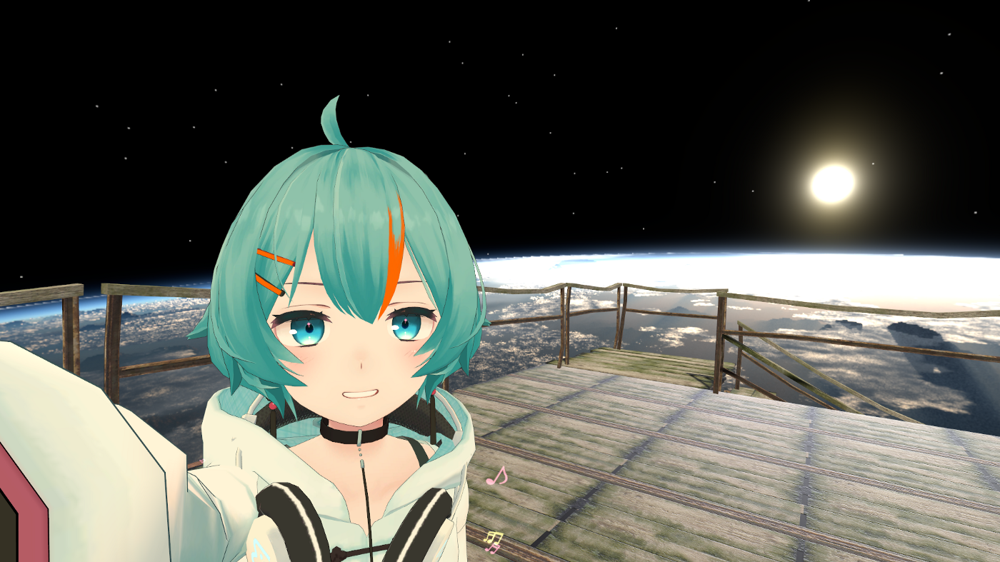
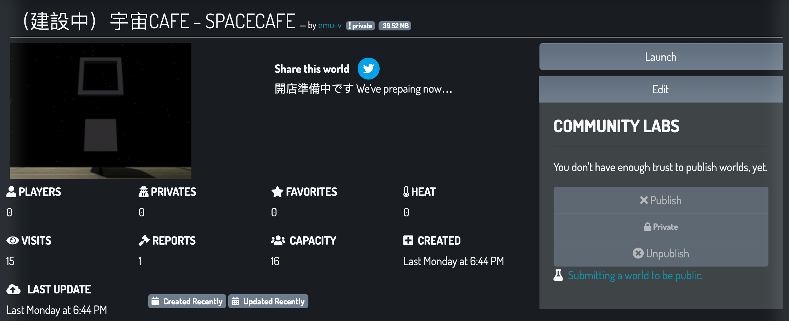

emu-v
May 5, 2021
VRChat始めて半月／ゴールデンウィークの記録
VRChat始めて1週間で色んな方がお友だちになってくださって、ぼくにとっての初イベント「#mioアバター集会」にも参加させていただきました。
さてそんなVRChat生活開始から半月ほど経った5月、日本はゴールデンウィークです！
幸いぼくはゴールデンウィーク=お休みな生活なので「この機会にVRChatいろいろやるぞ 💪 」と思っていました。
平日だとなかなかまとまった時間取れないので何かに「ゼロからガッツリ入門」ってできないのですよね。
- アバターさん見た目カスタマイズしたい
- 自分の部屋（ワールド）作りたい
- 空飛びたい
- 火とかビーム噴きたい
具体的には前回の記事で書いた↑にチャレンジです！
アバターさんの髪の毛染める
薄荷ちゃんはデフォルトですごく可愛いですが、可愛いすぎて色んな方が着てるので「見分けてもらえるように見た目をカスタマイズしたいなー」と思ってました。
思い浮かぶカスタマイズポイントは服と髪ですが、まずは髪の毛にちょっと差し色入れてみました。
なぜ髪からか？そこに髪のテクスチャがあったから。
「テクスチャ」っていうのは2Dの正方形画像で、合った描き方するとUnityさんが3Dデータ（モデル）にいい感じに「マッピング」してくれます。たぶん「UVマッピング」っていうやつ。
3Dデータのモデルが地球儀なら、テクスチャのUVマッピングはメルカトル図法の地図だと理解した！合ってる？
薄荷ちゃん作者のmioさんはそのテクスチャの元ファイルも同梱してくださってるのですが、PSDもクリスタも開いたら膨大なレイヤーが綺麗に整理されてて圧巻でした、、ぼくは…「よし、次回がんばろう 💪 」って思いました。
…フォトショかクリスタお勉強します。
ということで今回は手っ取り早くUnityから読み込まれるPNG画像を直接編集しました。
PNG画像に色を塗りながらUnityで3D表示確認して〜という作業を繰り返すと狙った位置の髪の毛の色を変えられるようになりました。
なるほど！
— emu-v🌱えむ (@emu0v) May 1, 2021
こういうことか！！
薄荷ちゃん髪染め中 pic.twitter.com/in5nvJrKXU
VRChatにアップロードしてHomeで動かしてみます。
動くともっとかわいい！
え、うちの薄荷ちゃんめちゃかわいくない？？ pic.twitter.com/Iysot8lInw
— emu-v🌱えむ (@emu0v) May 1, 2021
髪の毛染めてお友だちにお会いしたら「かわいい〜！」って褒めてもらえてめちゃめちゃうれしかったです♪
今回Photoshop力が足りなさすぎて1色で塗ってしまったので次はグラデとか入れたい！
後日「調整レイヤー使うといいよー」って教えていただいたので試してみたい 💪
そしてUnityでアバター編集したので”avatAr”のスペルを完全に理解しました！
Unityのプロジェクト名で”avator”って綴って作り直したり、人は失敗から学ぶのですよ。
“avatar”って元はサンスクリット語らしいですね、なるほどー。
❌ avatEr
— emu-v🌱えむ (@emu0v) May 3, 2021
❌ avatOr
✅ avatAr
音楽イベント初観戦
「音楽イベントあるよー」って教えていただいたので伺ってみました。
#ボカブレ
お友だちがDJとして出演されるイベント「#ボカブレ」に伺いました♪
5月2日20時15分から配信予定の #ボカブレ ！！
— VOCALOiD OutBREAK ボカブレ【毎月第一日曜開催】 (@VOCALOiD_Break) April 25, 2021
タイムテーブルと出演者を紹介致します！！！
今回はゲストにリカルド(LR)さん ( @L_Rocardo163 )をお呼びして、今回もブチ上げ必至なテンションでお送り致します！
ご視聴は下記のURLからどうぞ！！https://t.co/6e9jkVzbd4 pic.twitter.com/qIcldmi4NU
こちらはイベントでDJしながらパーティクル飛ばすCOCOLOさん♪ 「#mioアバター集会」の運営もしてくださったしDJもされるしすごい！
#ボカブレ at @kissayuduki08 で踊る @GYU_CocoLo_VRC さんアニメ作ってみた♪
— emu-v🌱えむ (@emu0v) May 3, 2021
キラキラ☆パーティクル pic.twitter.com/c2Hj1U7JEM
場所は「喫茶結月」さんで畳ブースもあって落ち着ける雰囲気でした♪
お店が地下なんですけど「地下室付きの自分の部屋（ワールド）作りたい」って思ってたので「わー！いいなー！」と思いながらお店の中ぐるぐるしてました。
さんにんで！ pic.twitter.com/CHUdIP30XT
— emu-v🌱えむ (@emu0v) May 2, 2021
#QDC_VRC
もう1つ伺ったDJイベント「#QDC_VRC」。
お友だちになってくださった方が複数参加されているので伺ってみた。
昨夜は #QDC_VRC 初参加させていただきありがとうございました！
— emu-v🌱えむ (@emu0v) May 5, 2021
とても楽しかったです♪
HMDの調子わるかったりで写真撮れてなかったのでTweetめちゃうれしいです！ https://t.co/LELzozMyBN
最初デスクトップ版で参加してたりOculus Questさんが不調だったりで視界はぐるぐるしてたけど、イベントはすっごく楽しませていただいた♪
ワールド制作2回目
前回の記事で書きましたが「New Userに上げていただいたし早速ワールド作るか」とノリですでに空っぽのワールドを1つ作ったことがありました。
1回目は本当にワールドの制作体験のつもりで必要なものと流れを知れたのでこれはこれで満足です♪
そして2回目はせっかくなのでもうちょっとワールドらしくしようと考えました。
なんだけどUnityのアセット（3Dデータ、テクスチャとして使える画像、音源などなど）が配布されてるアセットストアがすごくて、無料のアセットだけでも無限に見てられる、困った。
結果すっかりコンセプトが迷子になりました。

ちょっと前にお友だちが作ってるワールドに伺ったら壁が1面宇宙空間になってて素敵だったんですよ、宇宙に落ちたけど。
なので「宇宙に浮かんでる部屋いいなー」と思ったのでそんな感じにしたいなと思ってました。
で、そこからコンセプトが迷走して謎の黒っぽいモノリスっぽい何かを浮かべてみたり、廃墟っぽいフロア作ってみたり、でもメインの空間はモダンで綺麗な方がいいなとかとか、ダウンロードさせていただいたアセットを並べました！並べただけ！
まだトラストランク低くて公開できないので動画でご紹介です。
トラストランク”User”に上がれたら公開するので見てください！

UnityとVRCSDK3お勉強
アバターさんカスタマイズするにしてもワールド作るにしても、どうやらUnityとVRCSDKは必要です。
そしてぼくはVRCSDK3が出てから始めた人でバージョン2時代の資産とかないので2には目もくれず3だけ勉強するつもりです。
でもまだUnityとVRCSDKの境目が区別すらできてないので調べながら試行錯誤してます。。。
#VRCSDK3_memo ワールド作成
— emu-v🌱えむ (@emu0v) May 3, 2021
1. VRCSDK3(world)をインポート
2. [menu]VRChat SDK show ctrl panel -> Auth
3. -> Builder -> set up layers, collison matrix
↑ここまでがVRC特有手順っぽい
VRCSDK3で初めてUdonもこねました。
“Udon”はUnity上でVRCSDK3を使ってVRChatのアバターやワールドを開発するための「ビジュアルプログラミング環境」だと思う、たぶん。
VRCSDK3だと鏡の表示／非表示切り替えするためにもUdonが必要。
これもどうやら避けて通れません。
なんとなく考え方はわかった気がするので勉強します。
色々作り方解説してくださってるWebサイトとか見てもバージョン2と3が混在してたりするので、ぼくみたいに最近始めた人はまず「その記事で扱ってるVRCSDKのバージョン」に注意すると良さそう。
VRChat公式のドキュメントや動画は英語なんですけど「Quest日本集会場で制作系の話しててDiscordもあるよー」って教えていただいたので早速伺ってみました。
Discordにも参加させていただきました♪
ディスコのプロフィールURLがよくわかんないけどIDは”emu-v”です。
よろしくお願いします！！ pic.twitter.com/8kINPFesHi
— emu-v🌱えむ (@emu0v) May 5, 2021
ラジオ体操でマッチョを目指す
VRChatでラジオ体操するイベントを知ったので参加させていただきました。
GW中に #Questラジオ体操部 か #VRCラジオ体操 伺ってみたい！
— emu-v🌱えむ (@emu0v) May 3, 2021
こちらの動画で知りましたーhttps://t.co/BXUBCzIVdU
#Questラジオ体操部
名前通りOculus Questで参加できる「#Questラジオ体操部」。
でもPC参加アリとのことでQuestとPCの方は半々くらいでした
#Questラジオ体操部 でたくさんスタンプいただいた♪ pic.twitter.com/nyCv2ZJ1a1
— emu-v🌱えむ (@emu0v) May 5, 2021
そして「#Questラジオ体操部」が終わるとほぼ流れで皆さん別イベント「#Questマッチョ部」に参加されます。
#VRCラジオ体操
PC向けラジオ体操「#VRCラジオ体操」。
朝が早い！
今日は早起きして #VRCラジオ体操 参加させていただいてえらい！ pic.twitter.com/Y5dKBqIngv
— emu-v🌱えむ (@emu0v) May 5, 2021
#リングフィット集会
リングフィット未経験でも参加できる「#リングフィット集会」。
Nintendo Switchがほしくなります。
早く適正価格に戻らないかなー。
#リングフィット集会 初参加させていただいた♪
— emu-v🌱えむ (@emu0v) May 5, 2021
おなかプルプル pic.twitter.com/LqlXbfqnBU
以上、3つの体動かす系イベントに参加させていただきました！
で、ですね。
06:00 「#VRCラジオ体操」
07:30「#Questラジオ体操部」→「#Questラジオ体操部」連続開催
11:00 「#リングフィット集会」
といい感じに運動系イベントが続いて、しかも参加される方がかぶってたりするので「せっかくだしやるか！」みたいなノリで午前中を運動して過ごすことができます（過ごしました）。
真面目にやるとうっすら汗かくくらいの運動量になるのでこれからもぜひ参加させていただきたいです！
参加方法ですが、VRChatでは「イベント運営の方にお友だちリクエスト送って、時間になったらJoin」って方法がほとんどみたいです。
↓が各イベントの案内です。
健康Force「Salute Alleanza」、毎朝６時に集まってラジオ体操をしています。１日の始まり、終わりなど生活リズムの基点に
— クリーヴァ(ゆ)＠VRラジオ体操お兄さん (@kleava) January 31, 2021
第1は
kleava(毎日)
第2は曜日により
れいぢ_reiz3716(月火水)
nanaura(木)
seba.000(金)
akai_nana(土日)
にjoinしてください
スタッフは随時募集中!https://t.co/PHC68MYFGY pic.twitter.com/7ev2R0rcAQ
🎉【開始30分前】🎉
— VRChatイベント情報 (@vrcevent_info) May 5, 2021
🕤11:00 ~ 12:00
✨【本体不要・毎日開催】436th #リングフィット集会 /はてな37・神城アオイ にJOIN✨
【備考】
その他いろいろ
こんな感じでやりたいと思ったことも進められており、またまたたくさんの方がお友だちになってくださり、VRChat始める前は思いもしなかったイベントにも参加させていただきました♪
イベントが楽しすぎる！
イベントを楽しませていただきつつVRCSDK3の概要も少し掴めたので色々教えてくださった皆様にほんと感謝です ✨
空飛んで火も噴きたいので引き続き楽しみつつがんばります 💪
Oculus Link
初代Oculus QuestでOculus Linkできました！
お友だちに教えていただいてAmazonウィッシュリストに入れてたケーブル買って試したら成功♪
Oculus Linkできた！
— emu-v🌱えむ (@emu0v) May 1, 2021
このケーブルとQuest 1で成功しましたhttps://t.co/ThH2aleLaw pic.twitter.com/TXsHa9B4xQ
ただ1時間くらいで視界がカクついてしまう。
ケーブル品質、Questが古い、PCのGPUが弱い、色々心当たりありすぎて原因わかりません。
Twitterアイコン
デフォルトアイコンだと覚えてもらえなさそうなのでアイコン作りました！
VRChatリスペクトなお上品なアイコンです♪
アイコン設定したよ！
— emu-v🌱えむ (@emu0v) May 1, 2021
かわいいね！ pic.twitter.com/W22yQm3eRz
自撮りはカメラを180°回す
VRChatのカメラすごく便利で、インカメモードにすると勝手に自分の顔を真ん中にしてくれる。
でも3人以上で並んで自分が端っこにいるときとかうまく撮れないので困ってた。
「カメラ自体を回せばいいんだよー」って教えて教えていただいた！
なるほど！
{« tweet user=“emu0v” id=“1389032124947173378” »}
「VRChat落ちた？」→ status.vrchat.com
2021/05/04（日本時間）にVRChatが落ちた。
VRChatで何か起こった時は https://status.vrchat.com/ みるとステータスがわかる。
ワールドをアップロードできなくなって「何か変なオブジェクト入れちゃったのかなー？」と思ったらUnityのVRCSDKがログアウト状態になった。
「あ、これもしかしてVRChat落ちた？」と思ってTwitterみつつステータスページ探したらちゃんとVRChatのステータスがわかるようになってて「いまダメです」って表示されてた。
#VRChat 落ちたhttps://t.co/FDQtT6G7k4 pic.twitter.com/ArCdlGDvVT
— emu-v🌱えむ (@emu0v) May 4, 2021
英語のページだけど↑が何かダメなとき、↓が何も問題ないときなのでわかりやすいと思う。
#VRChat 復旧👏
— emu-v🌱えむ (@emu0v) May 4, 2021
ありがとうございます！ありがとうございます！ https://t.co/zM53hngk54 pic.twitter.com/5LQuZjBFjq
中の人すぐ復旧してくださってありがとうございました。お疲れ様です 🙏
「UNDERGROUND CITY」がかっこいい
もちみちさんのVRChat紹介動画が好きで拝見してるのだけど、紹介されていた「UNDERGROUND CITY」がとてもかっこよかった♪
動画の中で紹介されてるワールドの一覧まとめました。
実は最初はYouTubeにコメントしたのだけどURL書いたら自動削除されてしまった 😭
こっちにメモ
— emu-v🌱えむ (@emu0v) May 3, 2021
BALLOON ROOFTOPhttps://t.co/f4WbmNyW2U
THE SANCTUARYhttps://t.co/MNhSZB3NM8
3択ビーチフラッグス-BEACHFLAGShttps://t.co/Z25qMzhSTy
5TH STREET BARhttps://t.co/jzcwpijcU3
COCONUT BEACHhttps://t.co/iDpCFC9dNE
UNDERGROUND CITYhttps://t.co/YYoBnQU92c
ラジオ体操ももちみちさんの動画で知りました！感謝♪
GW中に #Questラジオ体操部 か #VRCラジオ体操 伺ってみたい！
— emu-v🌱えむ (@emu0v) May 3, 2021
こちらの動画で知りましたーhttps://t.co/BXUBCzIVdU